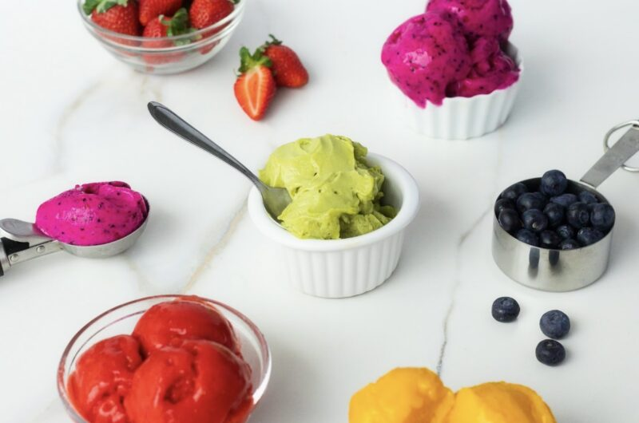

Home
Fruit Ice Cream

Description
If you're looking for a refreshing recipe for this summer, this fruit ice cream is
perfect!
This is because it contains no sugar or any other ingredients other than frozen fruit.
So, this fruit ice cream is a 100% natural and healthy option.
Ingredients
- 2 bananas or 250 grams (It will serve as the sweetener in the recipe.)
- 250 grams of another fruit of your choice
Optional ingredients
- Sugar or sweetener of your choice
- Mint
- Lemon juice
- Cocoa powder
- Milk
Steps
- Start by cleaning your fruits for at least 6 hours
-
Then, chop them into smaller pieces. This step is essential to make blending the
fruit easier.
-
Now, freeze the already cleaned, peeled and chopped fruits. At this stage, you can
store the fruits in jars or ziplock bags and make any combination you want. Here are
some flavor suggestions: banana + pitaya; banana + avocado; banana + blueberry;
strawberry and mango
- Once the fruits are frozen, transfer them to a food processor (or blender)
- If you want, add other ingredients of your choice and start blending.
-
From time to time, stop blending to scrape the sides and, after a while, the fruits
will reach the consistency of ice cream
-
Now, you have the option to serve the ice cream and eat it right away or freeze it
for later.
-
So, to freeze it, put the already blended fruit ice cream in ice cube trays and put
them in the freezer.
-
Once frozen, you can use these ice cubes to make more ice cream or use them in
smoothies, juices and shakes. It's delicious!
! Consume your frozen Fruit Ice Cream within 30 days.